Everything needed to use the mark correctly: construction, spacing, colour, type, and the cases where it breaks. Version 1, for Zharp 0.7.0.
Three dashes trail behind a solid Z. The dashes are motion, not decoration, so they always sit to the left of the letter and never move to another side.
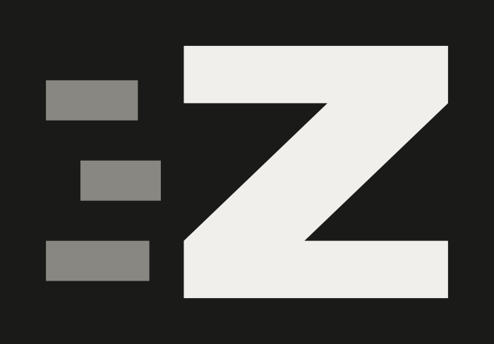
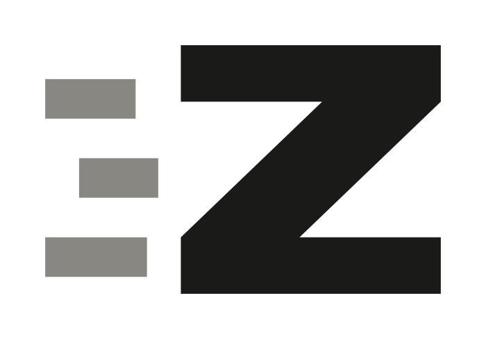
Clear space equals the bar weight, 10 units, measured from the outer edge of the mark including the dashes. Nothing enters that band: no type, no rules, no other logos.
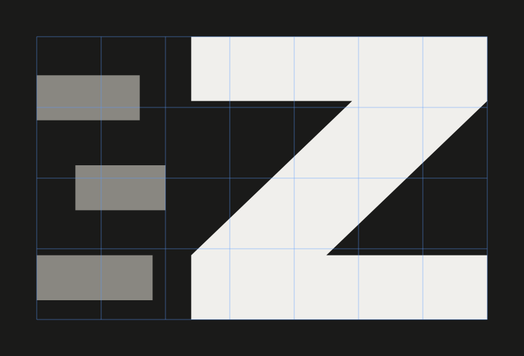
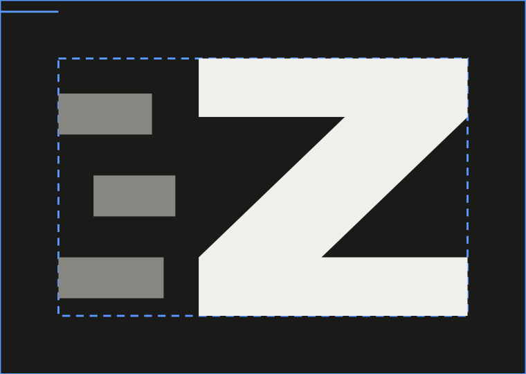
Below 32 pixels the three dashes collapse into a grey smear. The icon set handles this automatically: 16 and 24 px ship without dashes, everything larger keeps them. Never hand-scale the full mark below 32 px.
| Context | Size | Form |
|---|---|---|
| Favicon, tray | 16, 24 px | Z only, no dashes |
| App icon, taskbar | 32 to 256 px | Full mark |
| Site header | 26 to 40 px tall | Full mark or lockup |
| Print, stickers | 12 mm and up | Full mark |
The mark needs a ground, a letter, and a dash tone that sits between them. The dash tone can drop to the letter colour when only one ink is available.
#1A1A19Backgrounds, dark tiles
#F0EFECThe letter on dark grounds
#898781Trailing dashes only
#F3F1EALight tiles and light grounds
Headlines and body copy are set in Inter, never heavier than weight 500. Anything that reports a fact, a version, a shortcut, a file name or a label is set in DM Mono with wide tracking.
| Role | Face | Size | Tracking |
|---|---|---|---|
| Display | Inter 500 | clamp(34, 5.4vw, 66) | -0.038em |
| Heading | Inter 500 | 24 px | -0.02em |
| Body | Inter 400 | 17 px | 0 |
| Label | DM Mono 500 | 11 px, uppercase | 0.22em |
| Code, keys | DM Mono 400 | 13 px | 0.02em |
The wordmark is always lowercase. Never set it in a display face, never letterspace it tighter than 14 units, and never stack it under the mark.
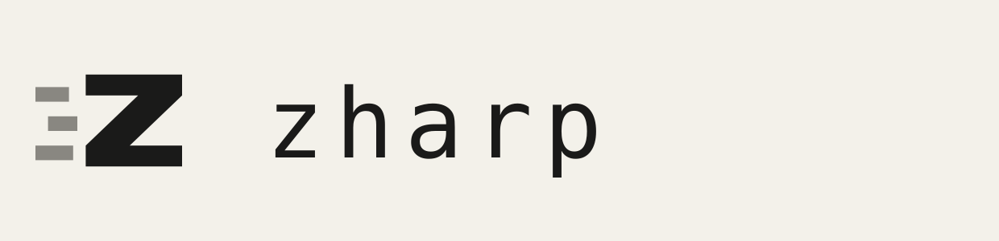
Corner radius is 22 percent of the tile. The mark is centred on the tile's optical centre, not its geometric one, because the dashes weight it left.
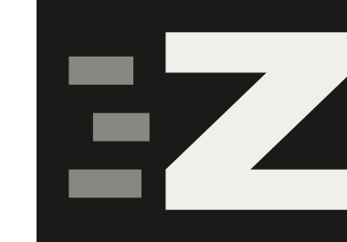
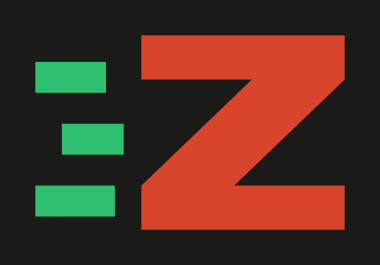
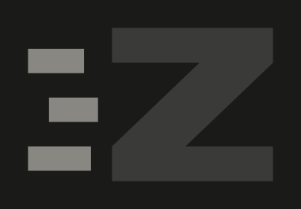
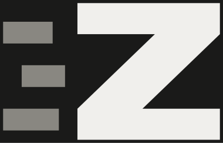
| Path | Contents |
|---|---|
| logo/ | Mark on ground, cream, ink, single ink, lockups, wordmark, construction and clear space diagrams |
| icons/ | 16 to 1024 px PNG, apple-touch-icon, maskable, favicon.ico with seven sizes |
| social/ | 1200 by 630 share card |
| tokens/ | tokens.css and tokens.json, colour, type and radius values |
| misuse/ | The six failure cases shown above |